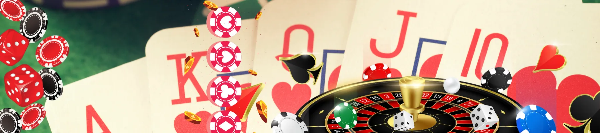

betti1 Casino Login – Official Website & Sign In Great Britain
– Experience the premier gaming hub of betti1 in 2026
The digital gaming landscape has evolved significantly, and betti1 casino has emerged as a frontrunner for enthusiasts seeking a refined experience. Whether you are accessing the platform from Great Britain or the UK, the level of service remains unparalleled. Navigating the betti1 login portal is the first step toward a world of immersive slots and live dealer tables. "The interface at betti1 is remarkably fluid, making the transition from registration to gameplay feel instantaneous," mentions a senior software designer from Toronto. With a focus on security and user-centric design, the betti1 casino login process is shielded by advanced encryption, ensuring your data remains private while you explore the latest betti1 uk offerings. In 2026, this platform continues to set the benchmark for high-stakes entertainment across the globe.
100% bonus on your first deposit
Claim Bonusbetti1 Casino Login – Quick Access
Efficiency is the cornerstone of 21st-century gaming. When you initiate a betti1 casino login, you aren't just opening a website; you are entering a high-performance ecosystem designed for speed. The developers behind betti1 have meticulously optimized every server request to ensure that players in Great Britain experience zero latency. For those looking for betti1 casino uk login options, the protocol is identical, maintaining a unified global standard of excellence.
Login to betti1 casino account
Accessing your betti1 dashboard is a straightforward affair, yet it is layered with security. The platform utilizes SSL (Secure Sockets Layer) technology to create an encrypted link between the server and your browser. This is particularly important for Great Britain users who prioritize financial privacy. Once you reach the betti1 login page, your credentials—typically an email address or username and a robust password—are your keys to the vault.
Furthermore, the system is designed to remember your preferences. If you frequently use betti1 casino uk, the site will automatically adjust its localization settings, showing you the most relevant betti1 promo code offers for your region. The persistence of the login session is also managed intelligently, balancing convenience with the need to prevent unauthorized access.
Sign in betti1 casino step-by-step
For those new to the platform, here is the architectural breakdown of the sign-in procedure:
- Navigate to the Official Domain: Always ensure you are on the authentic betti1.com or a verified local mirror to protect your identity.
- Locate the Sign-In Button: Usually positioned in the upper right-hand quadrant, the button provides immediate access to the credential input fields.
- Input Credentials: Enter your registered email and the password you created during the betti1 casino uk login setup.
- Two-Factor Authentication (2FA): For added security, many users in Great Britain choose to enable 2FA, requiring a code from a mobile device to finalize the betti1 login.
- Confirmation: Once validated, the system redirects you to the main lobby, where your £ balances and active bonuses are displayed.
betti1 Casino Official Website
The betti1 casino official website serves as the central hub for thousands of players. Its architecture is a blend of modern aesthetics and functional simplicity. Whether you are reading betti1 com reviews or looking to deposit in £, the site provides a centralized experience that is hard to replicate. The aesthetic is clean, avoiding the cluttered "neon-overload" common in older platforms, which contributes to its positive betti1 casino review ratings.
Direct access to official site
Having direct access to the betti1 infrastructure is vital for maintaining a secure connection. The platform uses a content delivery network (CDN) to ensure that whether you are in the UK or Great Britain, the page load speeds are consistent. This directness also applies to customer support; the official site hosts a 24/7 live chat feature that bypasses third-party filters, ensuring that betti1 casino uk players get answers in real-time.
How to avoid fake websites
In the digital age, phishing remains a threat. To ensure a safe betti1 login, players must be vigilant. Scammers often create "look-alike" domains that mimic the betti1 casino uk login page to harvest passwords.
- Check the URL: Always verify that the domain starts with "https" and contains the correct spelling of betti1.
- Look for the Padlock: The browser’s address bar should show a padlock icon, signifying a secure certificate.
- Avoid Suspicious Emails: Never click on betti1 promo code links from unverified email senders; always visit the site directly.
- Official App Usage: Downloading the official betti1 application from the site is often safer than using unknown third-party mirrors.
betti1 Casino Great Britain – Access Guide
Operating in the Great Britain market requires a deep understanding of local gaming culture and regulatory frameworks. betti1 casino has tailored its platform to meet these expectations, offering a localized experience that feels native to the Great White North. From the inclusion of specific payment gateways to the timing of promotional events, every aspect of betti1 is fine-tuned for the Great Britain audience.
Can you use betti1 casino in Great Britain?
Yes, betti1 is fully accessible and optimized for Great Britan. The platform operates under an international license that permits it to offer services to players in various provinces. This legality is bolstered by robust age-verification systems, ensuring that only eligible adults can perform a betti1 casino login. Furthermore, the platform's support for international standards means that players from the GB region who are traveling can also access their accounts without major hurdles.
Access restrictions and tips
While access is generally open, some local ISPs (Internet Service Providers) might occasionally implement filters. To maintain a steady betti1 login connection, consider the following technical tips:
- Use a Stable Connection: Wi-Fi is preferable to cellular data for large game downloads and live dealer streams.
- Update Your Browser: Modern HTML5 games at betti1 casino uk require the latest browser versions for optimal rendering.
- Clear Cache Regularly: To avoid betti1 casino login errors, clearing your browser’s temporary files can often resolve session conflicts.
- Localization: Ensure your settings are set to the correct region to receive the most accurate betti1 promo code notifications.
"The freedom of movement within the betti1 interface allows players in Great Britain to explore thousands of titles without the friction often found on legacy sites," – states a 2026 tech analysis in a betti1 casino review.
betti1 Casino Login Issues
Even the most sophisticated systems can encounter hiccups. Troubleshooting a betti1 login failure is usually a matter of checking basic settings. The betti1 casino support team has documented thousands of scenarios to ensure that whether you are a betti1 uk player or located in Great Britain, your downtime is minimized.
Forgot password or email
This is the most common cause of betti1 casino uk login issues. The "Forgot Password" utility is prominently displayed on the login modal. Clicking it triggers an automated workflow where a reset link is sent to your registered email address. For security, these links are time-sensitive and can only be used once. If you have forgotten which email you used for your betti1 login, you may need to contact the live support team with your verification documents ready to prove ownership of the account.
Account access problems
Sometimes, an account might be temporarily locked due to multiple failed betti1 casino login attempts. This is a protective measure designed to thwart brute-force attacks.
| Issue | Potential Cause | Resolution Steps |
|---|---|---|
| "Account Locked" | Multiple failed password entries | Wait 30 minutes or contact support 🛠️ |
| "Region Blocked" | IP address from restricted territory | Verify you are in Great Britain or the UK 📍 |
| "Loading Loop" | Incompatible browser extensions | Disable ad-blockers and refresh betti1 🔄 |
| "Verification Needed" | Standard KYC (Know Your Customer) check | Upload ID through the betti1 casino portal 📁 |
Online betti1 Casino – Quick Overview
The betti1 casino review landscape consistently points toward one thing: variety. By partnering with world-class software providers, betti1 ensures that its library is always fresh. From the classic vibes of betti1 uk fruit machines to the cinematic graphics of 2026's top video slots, there is something for every demographic in Great Britain.
Main features
The platform's features extend beyond just games. The betti1 login grants access to a comprehensive financial suite where you can track your spending, set deposit limits, and manage your £ withdrawals. The inclusion of cryptocurrency options alongside traditional CAD and GBP methods reflects the forward-thinking nature of betti1 casino.
Games and platform
The betti1 platform is divided into several logical segments:
- 🎰 Slot Library: Thousands of titles including progressive jackpots and megaways.
- 🃏 Table Games: High-definition versions of Blackjack, Baccarat, and Roulette.
- 🎙️ Live Casino: Real-time streaming with professional dealers for betti1 uk fans.
- 🎮 Arcade & Crash: Fast-paced games like Aviator that are trending in Great Britain.
- 📅 Tournaments: Daily and weekly competitions with substantial £ prize pools.
betti1 Casino Rewards (Quick Info)

Bonuses are the lifeblood of the industry, and the betti1 promo code system is designed to be both generous and transparent. Unlike other platforms that hide wagering requirements in fine print, betti1 casino presents its terms clearly, which has led to high marks in betti1 com reviews.
Available bonuses
New players in Great Britain are often greeted with a tiered welcome package. Upon your first betti1 casino login, you might find a match bonus in £ and a set of free spins for featured games. Regulars also benefit from "Reload Tuesdays" and "Cashback Weekends," which are staples of the betti1 uk experience.
How rewards work
Activating a reward is usually done during the deposit process by entering a specific betti1 promo code. The funds are then credited to a separate "Bonus Balance." To convert these into withdrawable £, you must meet the rollover requirements. This process is fully automated, and you can track your progress in the betti1 login member area.
betti1 Casino App & Mobile Login
In 2026, the majority of gamers prefer the portability of their smartphones. betti1 casino has met this demand with a dedicated application that replicates the full desktop experience. Whether you're on a subway in Great Britain or a bus in the UK, the betti1 login is just a thumb-tap away.
Login from mobile devices
Mobile betti1 casino login is even more streamlined than desktop. Most modern devices support biometric authentication, allowing you to use FaceID or fingerprint scanning to access your account securely. This minimizes the risk of someone shoulder-surfing your password while you're in a public space in Great Britain.
App vs browser access
While the mobile browser version of betti1 is excellent, the dedicated app offers several architectural advantages:
- Push Notifications: Get instant alerts about new betti1 promo code drops and tournament starts.
- Reduced Data Usage: The app stores many graphical assets locally, meaning it consumes less bandwidth than the website.
- Optimized Performance: Lower latency during live dealer games, which is crucial for betti1 uk professional players.
- Offline Modes: Some tutorial modes and demo games may be available without a constant internet connection.
Is betti1 Casino Safe?
Security isn't just a feature at betti1; it’s a foundational principle. The GB licensing bodies and international auditors regularly inspect the platform to ensure that the RNG (Random Number Generator) is truly random and that player funds are held in segregated accounts. This rigorous oversight is why betti1 casino remains a trusted name in 2026.
Security basics
Beyond the betti1 login encryption, the platform uses AI-driven anomaly detection to identify suspicious betting patterns or unauthorized login attempts. If the system detects a betti1 casino uk login from an unusual IP address, it may automatically trigger an additional verification step to protect the account owner.
Safe login tips
To maintain maximum security for your betti1 casino account, we recommend:
- Unique Passwords: Never reuse a password from another site for your betti1 login.
- Public Wi-Fi Caution: Avoid making large £ transactions while on unsecured public networks in Great Britain.
- Logout Regularly: Especially if using a shared device, always finalize your session properly.
- Monitor Activity: Periodically check your "Last Login" history within the betti1 casino uk settings.
"The commitment to player safety at betti1 is visible in every layer of their technology stack, from SSL handshakes to responsible gaming tools," – states a 2026 betti1 casino review.
User reviews

Mark Spenser
I've been using betti1 since 2024 and the 2026 updates have been incredible. The betti1 login is so fast on my iPhone 17. Highly recommend it for anyone in Great Britain looking for a smooth experience.
Bob Rock
The betti1 casino uk support team is top-notch. I had an issue with a betti1 promo code and they solved it in £ minutes via the live chat. It's rare to see this level of service nowadays.
Mila Backer
Searching for betti1 com reviews led me here, and I'm glad I joined. The game variety is huge, and the payouts in Great Britain are much faster than at other casinos I've tried.